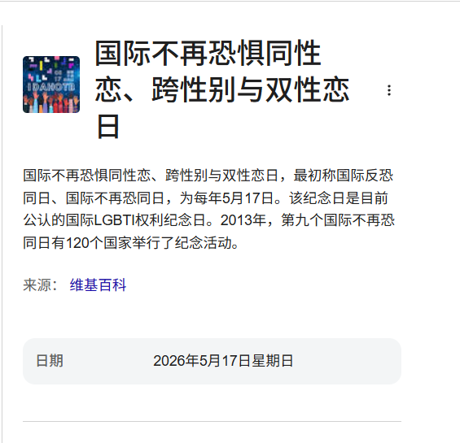

今天是 国际不再恐惧同性恋、跨性别与双性恋日🏳️🌈🏳️⚧️
（International Day Against Homophobia, Biphobia and Transphobia），最初称国际反恐同日、国际不再恐同日，为每年5月17日。该纪念日是目前公认的国际LGBTI权利纪念日。2013年，第九个国际不再恐同日有120个国家举行了纪念活动。
该活动希望唤醒世人关注对同性恋、跨性别与双性恋的恐惧，因性倾向及性别认同，而产生一切加在肉体上及精神上的暴力及不公平对待。由于全球不少国家的同志（同性恋者、跨性别者与双性恋者）会受到不公平待遇及歧视，“国际不再恐同日”的目的是使其他人可以知道同志可以健康和快乐生活，不会对别人的生活构成影响，从而令人不再恐惧同志。5月17日被选为纪念日源自世界卫生组织（WHO）在1990年5月17日将同性恋从国际疾病与相关健康问题统计分类中删除，后其成为各地区LGBT群体争取权益的重要节点。
https://t.co/9BPawf41jp
（International Day Against Homophobia, Biphobia and Transphobia），最初称国际反恐同日、国际不再恐同日，为每年5月17日。该纪念日是目前公认的国际LGBTI权利纪念日。2013年，第九个国际不再恐同日有120个国家举行了纪念活动。
该活动希望唤醒世人关注对同性恋、跨性别与双性恋的恐惧，因性倾向及性别认同，而产生一切加在肉体上及精神上的暴力及不公平对待。由于全球不少国家的同志（同性恋者、跨性别者与双性恋者）会受到不公平待遇及歧视，“国际不再恐同日”的目的是使其他人可以知道同志可以健康和快乐生活，不会对别人的生活构成影响，从而令人不再恐惧同志。5月17日被选为纪念日源自世界卫生组织（WHO）在1990年5月17日将同性恋从国际疾病与相关健康问题统计分类中删除，后其成为各地区LGBT群体争取权益的重要节点。
https://t.co/9BPawf41jp
